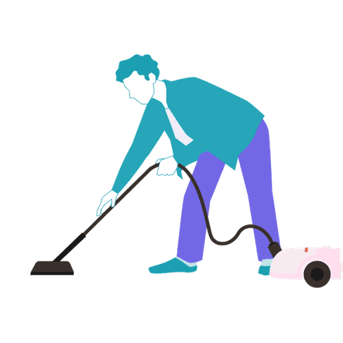

Many of Lufthansa Technik’s 4,500 employees were stuck in endless meetings. With 9 Spaces, they began building a more effective meeting culture.
Explore six non-awkward formats, methodsand exercises that help bring teams closer together.

This tool gives you a framework for addressing and resolving conflicts before they become too heated.